Extensiones everywhere
Seminarios theEvnt
Índice
- Introducción
- Repaso de navegadores
- ¿Qué se puede hacer?
- Herramientas
- Arquitectura
- Código a saco
- Publicación
Disclaimer
No vengo a hablar de mi libro, pero pido perdón si hablo mucho de PowerUp.
¿Qué es una extensión?
Más relevantes
- Excelente documentación
- Buenos ejemplos
- Fácil de debugear (Developer Tools)
- Buen ciclo de desarrollo
- Documentación dura, *
- No encontré ejemplos
- Fácil de debugear (Firebug)
- Ciclo de desarrollo incómodo
- Documentación buena
- No encontré ejemplos
- Fácil de debugear (Web Inspector)
- Ciclo de desarrollo ?
¿No hay un estandar?
NO
 FireBreath
FireBreath¿Y qué cosas puedo hacer en una extensión?
Añadir una acción a la página
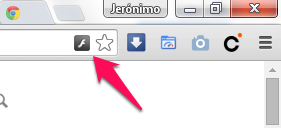Añadir una acción al navegador
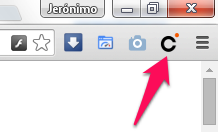Sacar un popup
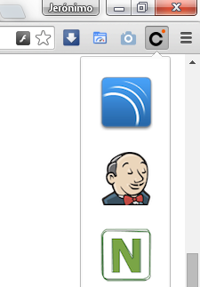Omnibox

Configuración
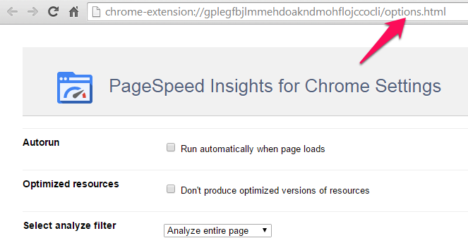Sobreescribir páginas
- Gestión de bookmars
- Gestión historial
- Nueva pestaña
Modificar...
- .. bookmarks
- .. historial
- .. cookies
- Añadir opciones al menú contextual
Modificar comportamiento
- Ejecutar scripts en background
- Inyectar Scripts en cualquier página
- Inyectar CSS en cualquier página
- Reaccionar a la carga de cualquier url
- Interceptar cualquier peticion
- Cargar/cerrar tabs
Herramientas
- El navegador :)
- Tu editor de textos preferido
- En Firefox: Add-on SDK
¿Y esto con qué lo programo?
Qué putada! No?

WAT
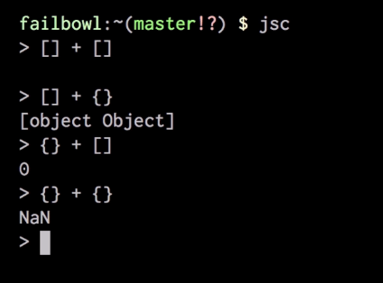¿y no puedo usar otra cosa?


En cualquier caso
¿Y qué framework JS utilizo?
...porque me han dicho que Ember y Angular lo petan.
El que quieras!
Pero que no haga cosas raras :(
https://developer.chrome.com/extensions/contentSecurityPolicy Chrome Extension using AngularJSArquitectura de una extensión
Página de "Background"
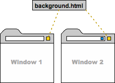Página de "Background"
- Aunque se llama página solo carga ficheros .js
- Si no la creas se autogenera a partir del JS principal
- Se ejecuta permanente en background
- No interactúa con el contenido del navegador
Página de "UI"
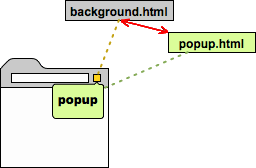Página de "UI"
- Páginas "virtuales" abiertas en una pestaña 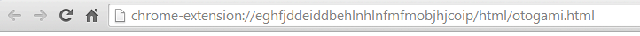
- Página de preferencias de la extensión 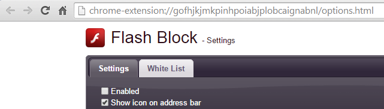
Página de "UI"
- Página de gestión de bookmars, nueva pestaña, etc 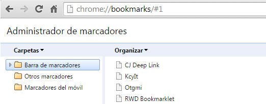
- El popup asociado a un botón de la barra o de la página 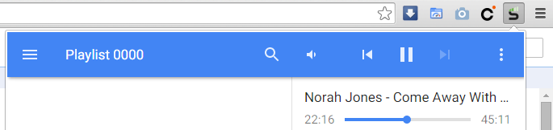
Página de "UI"
- Muestra el HTML que queramos...
- ...con TODO lo que necesitemos:
- HTML
- CSS
- JS
- Podemos meter los frameworks CSS y JS que queramos
- Podemos hacer las llamadas ajax que queramos
- Podemos acceder al DOM e invocar código de otras páginas UI y Background
Content scripts
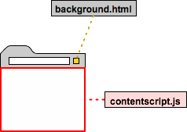Content scripts
- Los encargados de interactuar con el contenido de las páginas
- Se ejecuta en el contexto de la página cargada
- Equivalente a haberla cargado la própia página
- Pueden modificar el DOM
Content scripts
- Están desacoplados de la extensión!
- Pero se comunican por paso de mensajes
Show me the code!
http://bit.ly/jeroextensionmanifest.json
{
"name" : "Otogami PowerUp",
"short_name" : "PowerUp",
"version" : "0.0.16",
"description" : "Compra tus videojuegos...",
"icons": {
"16": "icon16.png",
"48": "icon48.png",
"128": "icon128.png"
},
"background" : {
"persistent": true,
"scripts": ["background.js"]
},
"content_scripts" : [
{
"matches" : [
"http://*/*",
"https://*/*"
],
"js" : [
"contentscript.js",
"iframeResizer.js"
],
"run_at" : "document_start",
"all_frames" : false
}
],
"permissions": [
"webRequest", "*://*/*",
"storage",
"tabs"
],
"manifest_version": 2
}
https://developer.chrome.com/extensions/declare_permissions
¡Mejor nos vamos al editor!
Distribución

Publicación
Estadísticas
¡Muchas gracias!